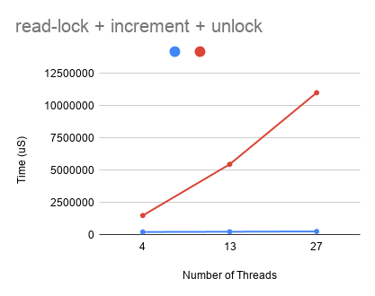

rcu_sync: For Scalable alteration of execution paths
The Linux kernel has a number of places that involve a slow path and a fast path for an operation. Fast path executes a lot more often, while the slow path is left for the rare cases. This split design can improve performance.
One such example of this pattern is the percpu-rwsem locking primitive. This locking primitive is designed for use cases where a tradition reader-writer semaphore (rwsem) still does not scale. A rwsem does not incur any lock contention when there are only readers involved, as multiple readers are allowed to execute their critical section concurrently. However, it does incur cache contention because each CPU has to exclusively gain access to exclusive access to the cache line containing the lock. This cause L1 cacheline bouncing among the reader CPUs. percpu-rwsem solves this problem by making using a per-cpu counter for each CPU.
A percpu-rwsem structure looks like:
struct percpu_rw_semaphore {
struct rcu_sync rss;
unsigned int __percpu *read_count;
struct rw_semaphore rw_sem;
struct rcuwait writer;
int readers_block;
};
The read_count element is a percpu counter keeping track of how many readers
are currently in their reader section.
The fast path
In the common case, where no writers are involved and a reader tries to acquire
the lock, all it needs to is increment its per-cpu read_count variable, and
enter the reader section. This involves no cacheline bouncing or contention
thus solving the first problem discussed (about L1 cacheline bouncing).
The slow path
If there is already a ‘writer’ that acquired the lock however, then the reader
must enter the slow path in order to acquire the lock. The slow path involves
acquiring a traditional reader-writer semaphore (rw_sem) in the
percpu_rw_semaphore object. Note that a writer acquiring the
percpu_rw_sempahore implies that it has also already acquired the traditional
reader-writer semaphore (rw_sem) as well. Because of this the reader will block
and be awakened later once the writer releases the rw_sem.
How does the reader switch between fast and slow paths?
Before a writer acquires a lock, it must notify readers that they must now
switch to their slow paths. This notification is done using the readers_block
flag in percpu_rw_sempahore.
One way to achieve this notification is: A writer atomically update readers_block.
flag. Readers then atomically read readers_block and make note that they must
now enter their slow paths to acquire the lock. Atomic reads are expensive
though and would defeat the scalability goals mentioned earlier.
Another way to achieve this synchronization between readers and writers, is
using the kernel’s rcu-sync framework. The rss element in
percpu_rw_semaphore is used for the purposes of this.
When a writer wants the readers to enter their slow path, it sets some state in
the rss element. For simplicity, let us assume that if the state is 1, then
the reader must enter their slow path and if the state is 0, then a reader must
enter its fast path.
When a reader checks this state, it must do so only inside an RCU reader section. This is achieved by just disabling preemption during the read access.
Once the writer changes the state to 1, it waits for a grace period. At the end of this grace period, the writer knows for sure that any future readers after this point, will only enter their slow paths.
However, some readers might have already entered their fast paths. Before
entering its critical section, the writer must ensure that there are no readers
active (readers and writers are mutually exclusive in a reader-writer
sempahore). To do this, it first acquires the internal rwsem and then scans
the per-cpu read_count variable and ensures they are all 0.
Quiz:
What if a reader has noticed that state is 0 and thinks that it needs to enter
the fast path, but has not yet incremented the read_count? Will the writer
falsely think that there are no more readers active and enter its critical section?
Ans:
This cannot happen because in the slow path, the reader’s increment of
read_count actually happens while the internal rw_sem is held. Since the
writer acquires the internal rwsem right after the grace period, the reader’s
update of the read_count will block until the writer releases the rw_sem in
the unlock path.
Performance of rwsem vs percpu-rwsem
The following test shows the scalability of percpu-rwsem. The test spawns a set of threads that do a lock/unlock 10,000 times and measures the total time duration of the test. As shown below, as the number of threads increase, the total time taken by an rwsem increases linearly, with the time taken by percpu-rwsem remaining at a constant.
